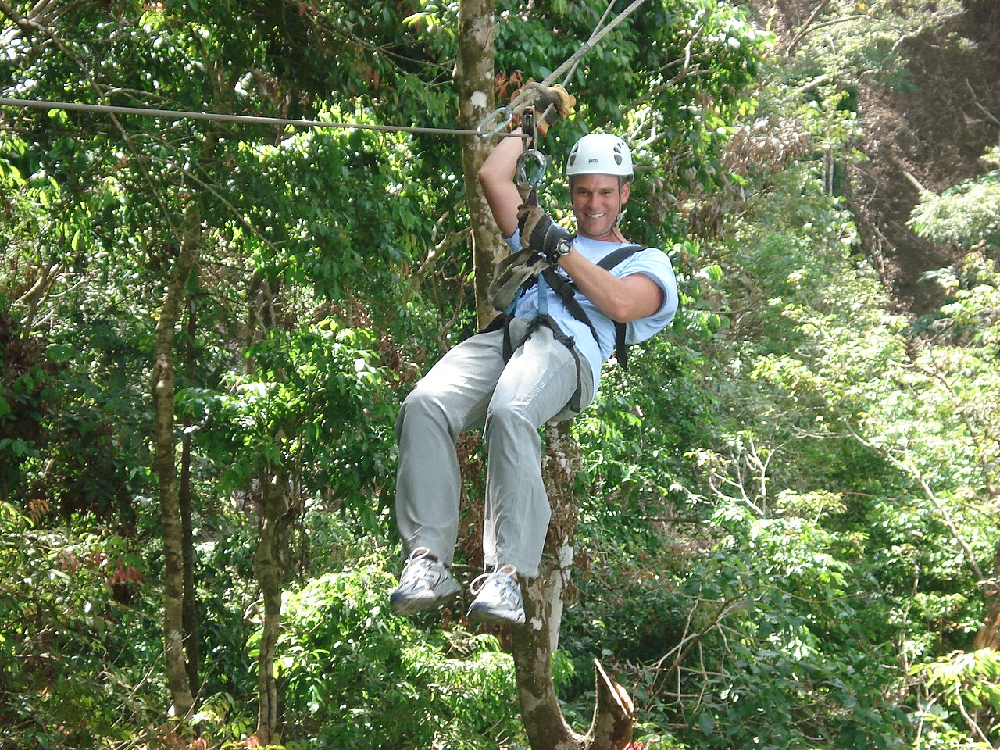
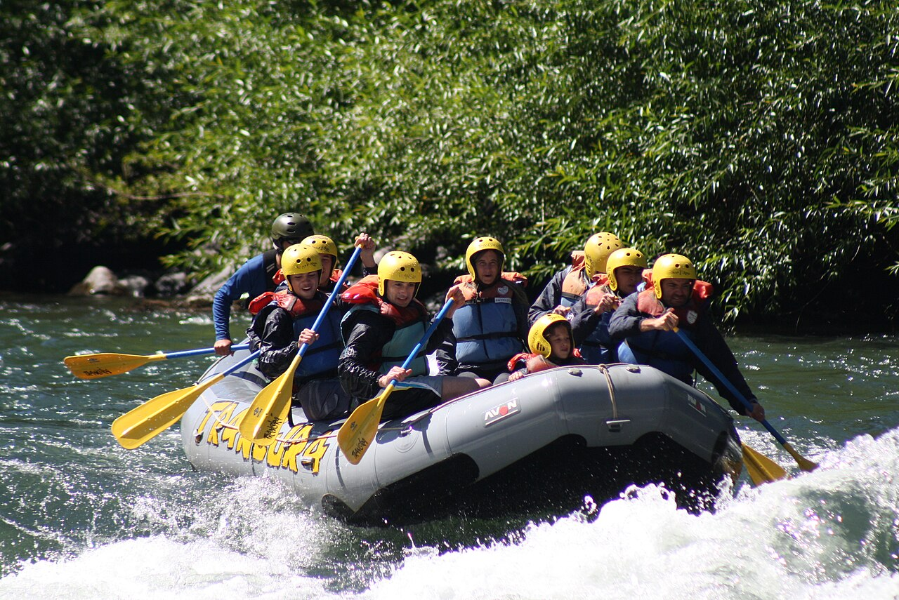
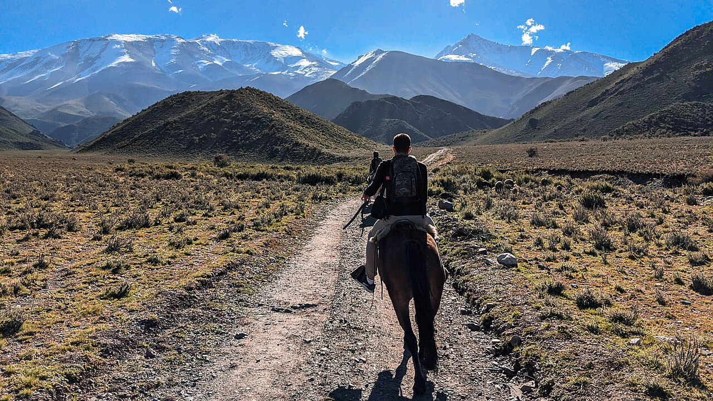
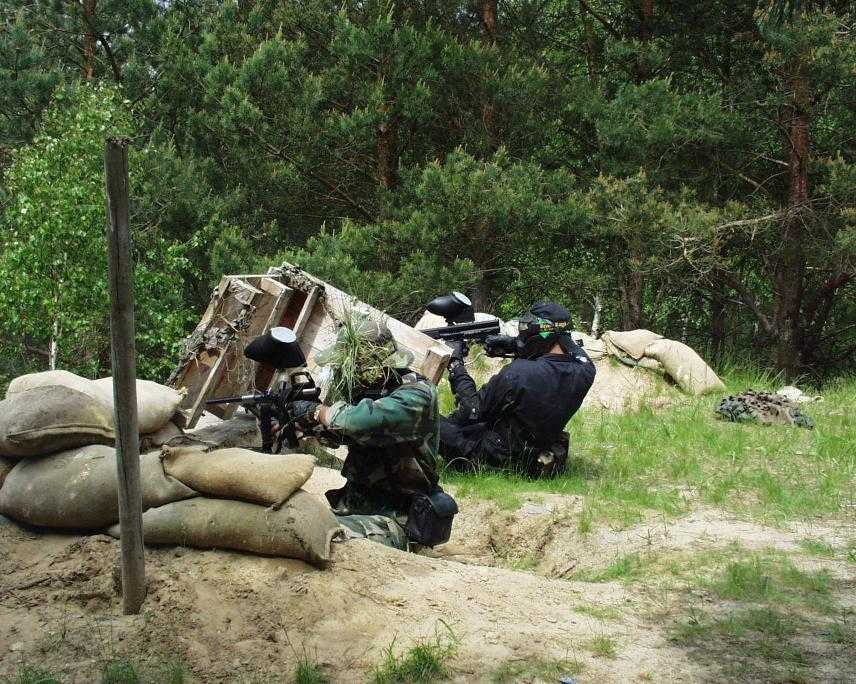

Naturaleza
NaturalezaCamping Los Lingues
Una idea para descansar al aire libre y conocer el entorno lacustre. Revisa el acceso, las normas del lugar y el pronóstico antes de salir.
Para quienes buscan una escapada tranquila en la naturaleza.
Explora actividades al aire libre y lugares que forman parte de EcoRuta Temuco. Elige una idea para planificar tu próxima salida.
NaturalezaUna idea para descansar al aire libre y conocer el entorno lacustre. Revisa el acceso, las normas del lugar y el pronóstico antes de salir.
Para quienes buscan una escapada tranquila en la naturaleza.
 Montaña
MontañaDescubre paisajes volcánicos y bosques de la zona andina. Las condiciones del terreno y el acceso pueden cambiar.
Antes de visitar, revisa información oficial y las rutas disponibles.

AventuraUna forma de observar el bosque desde otra perspectiva. Consulta condiciones, equipamiento y requisitos directamente con operadores habilitados.
Actividad sujeta a condiciones del lugar y del clima.

AguaExplora la posibilidad de recorrer los ríos de la región acompañado por guías y con equipo apropiado.
Verifica el nivel del río, las medidas de seguridad y la operación local.

FamiliaConoce senderos y paisajes rurales a otro ritmo. Busca recorridos adecuados para la experiencia de cada integrante del grupo.
Confirma acompañamiento, duración y cuidados de los animales con cada operador.

GruposUna alternativa recreativa para salir en grupo. Revisa las reglas, la protección requerida y la edad mínima con el recinto elegido.
Actividad mencionada por el proyecto; no hay un proveedor publicado.
Estas actividades son ideas para explorar la región. Las fotos ilustran cada actividad, pero no acreditan proveedores ni cupos disponibles. EcoRuta Temuco aún no publica precios ni reservas para ellas. Confirma condiciones con cada recinto u operador antes de viajar.
Ver ideas de packsLas fotografías de canopy, cabalgatas y paintball son referenciales; no muestran proveedores de EcoRuta Temuco. Se usan versiones reducidas para las tarjetas.


.jpg){kind=link}